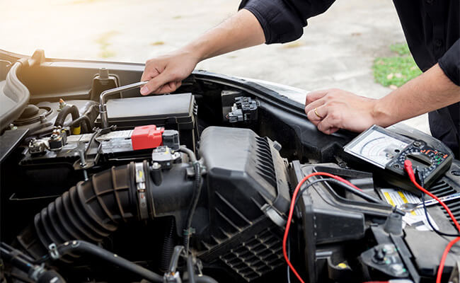

Sistema Eléctrico
Soluciones profesionales para tu vehículo

Expertos en Sistemas Eléctricos Automotrices
El sistema eléctrico de tu vehículo es complejo y vital para su funcionamiento. Desde la batería hasta los sistemas computarizados, cada componente debe funcionar perfectamente. Nuestros técnicos especializados cuentan con el equipo y conocimiento para diagnosticar y reparar cualquier problema eléctrico.
Servicios eléctricos que ofrecemos:
- Diagnóstico completo del sistema eléctrico con multímetro profesional
- Prueba y cambio de batería con garantía incluida
- Reparación y reemplazo de alternador
- Reparación del motor de arranque (marcha)
- Solución de problemas de luces y señalización
- Reparación de sistemas de carga y arranque
- Diagnóstico de fusibles y relevadores
- Reparación de instalación eléctrica y cableado
- Instalación de accesorios eléctricos
- Diagnóstico de cortocircuitos y fugas de corriente
- Reparación de sistemas de confort (ventanas, seguros)
- Limpieza y protección de terminales
Componentes principales del sistema eléctrico:
🔋 Batería
Almacena y suministra energía eléctrica para el arranque y accesorios. Es el corazón del sistema eléctrico.
Vida útil: 3-5 años
⚙️ Alternador
Genera electricidad mientras el motor funciona y recarga la batería continuamente.
Vida útil: 100,000-150,000 km
🔧 Motor de Arranque
Motor eléctrico que inicia el funcionamiento del motor de combustión.
Vida útil: 100,000-200,000 km
🔌 Sistema de Cableado
Red de cables que distribuye electricidad a todos los componentes del vehículo.
Mantenimiento: Inspección periódica
Problemas Eléctricos Comunes
🔴 Batería Descargada
Síntomas:
- Motor no arranca
- Luces débiles o parpadeantes
- Clicks al girar la llave
Solución: Prueba y reemplazo de batería si es necesario.
⚡ Alternador Defectuoso
Síntomas:
- Luz de batería encendida
- Batería se descarga rápido
- Luces que parpadean
Solución: Diagnóstico y reparación o cambio de alternador.
🔧 Motor de Arranque
Síntomas:
- Ruido de clic sin arrancar
- Motor no gira al encender
- Arranque lento o débil
Solución: Reparación o reemplazo del motor de arranque.
💡 Problemas de Luces
Síntomas:
- Luces que no encienden
- Luces intermitentes
- Fusibles que se queman
Solución: Revisión de fusibles, relevadores y cableado.
🔌 Fuga de Corriente
Síntomas:
- Batería se descarga estacionado
- Accesorios que fallan
- Fusibles que se queman frecuentemente
Solución: Detección y reparación de cortocircuitos.
🪟 Accesorios Eléctricos
Síntomas:
- Ventanas que no funcionan
- Seguros eléctricos fallando
- Espejos eléctricos sin mover
Solución: Reparación de motores y switches eléctricos.
Cuidados de la Batería
✅ Mantenimiento Regular
- Limpia las terminales cada 6 meses
- Revisa el nivel de electrolito (si aplica)
- Asegura las conexiones firmemente
- Protege terminales con grasa dieléctrica
❌ Evita Estos Errores
- Dejar luces o accesorios encendidos
- Viajes muy cortos frecuentemente
- Temperaturas extremas sin protección
- Ignorar la luz de advertencia